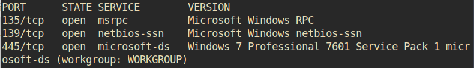

Task 1 Recon
Scan the machine. (If you are unsure how to tackle this, I recommend checking out the Nmap room)
How many ports are open with a port number under 1000?
• sudo nmap -sV -A 10.10.126.138
• 9
What is this machine vulnerable to? (Answer in the form of: ms??-???, ex: ms08-067)
• After searching for windows 7 professional 7601 service pack 1 microsoft-ds vulnerability it was revealed that the vuln. is EternalBlue
• MS17-010